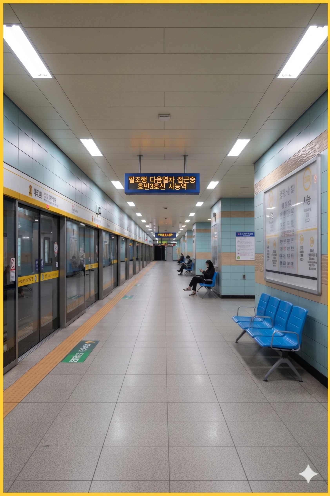

- 1. 개요
- 2. 역 정보 및 상권
- 3. 역 주변 정보
- 3.1. 출구 정보
- 3.2. 주요 인접 시설 상세
- 4. 일평균 이용객
- 5. 승강장
- 5.1. 3호선 (지하 2층)
- 5.2. 창전선 (지상 2층, 예정)
- 6. 연계 교통
- 7. 여담 (사능역 7대 전설)
1. 개요
효빈 도시철도 3호선 310번 및 미개통 노선인 창전선 C18번(예정). 효빈광역시 북구 사능동3가 432 (행정동 사능1동) 소재.
1994년 3호선 1단계 구간 개통과 함께 영업을 개시한 유서 깊은 역이다. 추후 하늘색 과좌식 모노레일인 창전선 2단계 구간이 개통되면 지상 2층과 지하 2층이 수직으로 교차하는 입체 환승역으로 거듭날 예정이다. 과거 군사정권 시절 구(舊) 전차 강제 폐선으로 인해 상권이 무너지고 인구가 반토막 났던 눈물겨운 역사가 있으나, 현재는 효빈 애니메이션 페스티벌(HAF)의 메인 게이트인 HSCO 효빈전시컨벤션센터를 끼고 있어 효빈시에서 가장 폭발적인 유동인구와 덕력을 자랑하는 성지로 완벽하게 부활했다.
2. 역 정보 및 상권
효빈광역시 북구의 근본 구도심 중 하나인 사능동 한복판에 자리 잡고 있다. 역 주변으로 사능중앙시장, 관공서, 노후 주거지와 신축 재개발 단지가 혼재되어 있으며, 무엇보다도 6번 출구 방향의 HSCO(효빈전시컨벤션센터)와 사능 베이커리 뮤지엄이 역의 정체성을 규정짓고 있다.
3호선 연선 중에서도 사능동 주민들의 결속력과 향토애는 타의 추종을 불허한다. 과거의 아픔 때문에 대중교통 노선이나 역명에 조금이라도 불이익이 생길 조짐이 보이면 구청장실이 뒤집어질 정도로 전투력이 높다. 이 동네에서 교통 행정을 잘못 건드리면 시장도 소금 세례를 받을 수 있다.
3. 역 주변 정보
3.1. 출구 정보
  사능역 출구 정보
사능역 출구 정보
|
||
|---|---|---|
| 번호 | 주요 시설 및 방향 | 비고 |
| 1 | 사능1동 행정복지센터, 사능동우체국, 사능파출소, 사능지구대 | 행정/치안 구역 |
| 2 | 사능 행복주택 (청년·신혼부부 특화 단지), 7호선 사능동3가역 방면 | 7호선 환승 연계 예정 |
| 3 | 사능 회주 아파트, 치남더샵(예정) 신축 부지, 사능 주택 재개발 구역 | 주거 단지 방면 |
| 4 | 사능고등학교, 7호선 치남역 방면 | 학군 방면 |
| 5 | 사능오거리, 사능중앙시장 (사능2동 방면), 사가당공원 (453m) | 상권 및 공원 |
| 6 |
HSCO 효빈전시컨벤션센터 (제1전시장/본관), HSCO 오디토리움, 사능미술관, 사능 베이커리 뮤지엄, 사능 스마트호텔 (2성급 / 140m) |
HAF 메인 게이트 ★ 야마부키 사아야 성지 (베이커리 로드) |
3.2. 주요 인접 시설 상세
1~3번 출구 방면 (행정 및 거주 단지)
1번 출구로 나가면 사능1동 행정복지센터와 사능파출소, 사능동우체국이 일렬로 늘어서 있는 핵심 행정 구역이 나온다. 2번 출구 앞에는 청년들의 꿈의 보금자리인 사능 행복주택이 입주해 있으며, 3번 출구 방면으로는 구축 대단지인 사능 회주 아파트와 초고층 주상복합으로 지어질 치남더샵(예정) 공사 현장이 펼쳐져 있다.
5번 출구 방면 (시장 및 공원)
5번 출구를 나서 사능오거리를 건너면, 구도심의 정취를 간직한 전통시장인 사능중앙시장 입구가 나타난다. 시장 골목을 지나 도보 453m 거리에는 북구 주민들의 훌륭한 쉼터이자 거대한 녹지 광장인 사가당공원이 펼쳐져 있어 산책객과 운동하는 시민들로 북적인다.
6번 출구 방면 (HSCO 전시컨벤션 타운 & 빵의 성지)
6번 출구는 이 역의 알파이자 오메가다. 출구를 나오자마자 HAF의 본진인 HSCO 효빈전시컨벤션센터 제1전시장과 대형 공연장인 HSCO 오디토리움이 웅장한 위용을 자랑한다. 그 맞은편 골목은 사아야 성지로 유명해진 빵집 거리이며, 구청에서 아예 각 잡고 세운 사능 베이커리 뮤지엄이 자리 잡고 있다. 도보 140m 초역세권에는 실속형 숙박시설인 사능 스마트호텔(2성급)이 있어 관람객과 바이어들을 흡수하고 있다.
4. 일평균 이용객
|
사능역 이용객 통계
| ||
|---|---|---|
| 연도 | 일평균 이용객 | 비고 |
| 2020년 | 9,721명 | HSCO 오프라인 전시 축소로 인한 감소 |
| 2021년 | 10,001명 | 1만 명 선 회복 |
| 2022년 | 11,323명 | HAF 행사 대폭발 및 사아야 빵집 거리 특수 |
| 2023년 | 11,345명 | 베이커리 뮤지엄 개관 효과 |
| 2024년 | 10,283명 | |
5. 승강장

5.1. 3호선 (지하 2층)
| 효 빈 ↑ | |||
| 하행 | ㅣ | ㅣ | 상행 |
| ↓ 고속버스터미널 | |||
| 상행 |
효빈 도시철도 3호선 |
효빈 · 고송나루 · 팔조 방면 |
| 하행 |
효빈 도시철도 3호선 |
고속버스터미널 · 효빈국제공항 방면 |
5.2. 창전선 (지상 2층, 예정)
※ 창전선 **급행 열차**는 이 역에 정차하지 않고 통과할 예정이다.
| 효 빈 ↑ | |||
| 상행 | ㅣ | ㅣ | 하행 |
| ↓ 효빈대병원 | |||
| 상행 |
창전선 (예정)
|
효빈 · 시청 · 북고송 · 팔조 방면 |
| 하행 |
창전선 (예정)
|
효빈대병원 · 소조 · 청능 · 토모리해수욕장 방면 |
6. 연계 교통
* 행정구역이 효빈광역시 북구이므로 효빈광역시 시내버스가 운행됩니다.
| 구분 | 정류소명 | 노선 번호 |
|---|---|---|
| 순방향 | 사능역 (6번출구 앞) | [급행] 6, 26, 39 | [간선] 112, 132, 172, 219, 242, 391 | [마을] 북구 2 |
| 역방향 | 사능역 (건너편) | [급행] 06-1, 62, 93 | [간선] 112-1, 312, 712, 129, 422, 391 | [마을] 북구 02-1 |
7. 여담 (사능역 7대 전설)
7.1. 1968년 전차 강제 폐지와 사능동 주민들의 50년 한(恨)
사능동 원주민들이 유독 대중교통 문제에 민감하고 전투적인 데에는 피눈물 나는 슬픈 역사가 깔려 있다. 1968년, 도로 확장을 핑계로 군사정권이 대대적인 전차(노면전차) 노선 정리를 단행했다. 이때 중구 도심의 본선 구간은 놔두면서, 정작 인구 5만이 넘게 살아 터져나가던 사능동~해서동(고속버스터미널 방향) 구간을 "외곽 지선이라 비효율적이다"라는 끔찍한 탁상행정 논리로 1969년에 강제 폐지시켜 버렸다.
노면전차가 사라지자 사능동 중심부는 그야말로 '육지 속의 고도(孤島)'가 되었다. 전차를 타면 30분 만에 가던 도심 출퇴근길이 좁은 왕복 2차선 도로에 버스와 마차가 뒤엉켜 무려 2시간이 넘게 걸리는 생지옥으로 변모했다. 이 교통 대재앙을 견디지 못한 상인들과 젊은이들이 썰물처럼 빠져나가며 인구는 1만 명대로 수직 낙하했다. 동네가 문자 그대로 무덤(陵)처럼 썩어 들어가던 이 50년의 깊은 한(恨)은, 1994년 3호선 사능역이 개통하며 역무원들에게 주민들이 눈물을 흘리며 꽃다발을 걸어주던 날에야 간신히 풀릴 수 있었다.
7.2. HSCO 오디토리움과 '사능 스마트호텔'의 2성급 기적
사능역 6번 출구로 나오면 HAF(효빈 애니메이션 페스티벌)의 심장인 HSCO 효빈전시컨벤션센터가 위용을 뽐낸다. 특히 성우들의 단독 라이브나 팬미팅이 열리는 HSCO 오디토리움은 3호선 역 출구와 직결되어 있어 접근성이 환상적이다. 그런데 이 엄청난 입지 덕분에 역에서 불과 도보 140m 떨어진 곳에 있는 평범한 2성급 비즈니스호텔인 '사능 스마트호텔'이 뜻밖의 초대박을 터뜨렸다.
HAF나 대형 라이브 행사가 열리는 주간이 되면, 이 2성급 호텔은 주변의 4, 5성급 럭셔리 호텔들을 가볍게 씹어먹는 객실 점유율 100% (6개월 전 조기 마감)의 기적을 매년 갱신한다. 짐이 많은 코스어들이나 아침 일찍 굿즈 줄을 서야 하는 물판(물판 대기) 철야조들에게는 '역 1분 컷, 행사장 3분 컷'이라는 물리적 거리가 그 어떤 호텔 수영장 조식보다 가치 있기 때문이다. 심지어 행사에 참석한 성우의 일본 소속사 스태프들마저 동선 효율을 이유로 이 2성급 호텔 스위트룸(?)에 묵었다는 전설이 있다.
7.3. 사능중앙시장의 변신과 '사능 베이커리 뮤지엄'의 탄생
역 5번 출구 앞의 사능중앙시장은 불과 몇 년 전까지만 해도 할머니들이 나물과 건어물을 팔던 평범하고 조용한 전통 시장이었다. 그러나 사능동이 《BanG Dream!》의 야마부키 사아야(실제 이름 한자인 沙綾와 동명)의 공식 성지로 떠오르면서 시장의 풍경이 180도 바뀌어버렸다. 주말마다 '사아야의 빵'을 찾는 덕후들이 시장을 어슬렁거리자, 눈치 빠른 시장 꽈배기 집과 옛날 빵집 사장님들이 일제히 '수제 초코 소라빵'과 '야마부키 크루아상'을 메뉴에 올리며 엄청난 매출을 쓸어 담기 시작한 것이다.
청년 제빵사들까지 빈 점포에 입점하며 순식간에 '빵집 특화 거리'가 조성되자, 북구청과 박효빈 시장은 아예 예산을 투입해 사능중앙시장 초입에 '사능 베이커리 뮤지엄'을 세워버렸다. 1층에서는 매일 갓 구운 지역 특산 빵을 팔고, 2층에서는 제빵 체험 클래스를 열어 HAF에 온 관람객들을 블랙홀처럼 빨아들인다. 구도심 쇠퇴 문제를 '서브컬처+소라빵' 하나로 해결해 버린 대한민국 도시 재생의 전설적인 성공 사례다.
7.4. 사능파출소와 우체국의 HAF 기간 극한 직업 생존기
1번 출구에 나란히 붙어 있는 사능파출소와 사능동우체국 직원들에게 HAF 기간은 그야말로 '전쟁'이다. 사능동우체국은 행사가 끝나는 일요일 오후 4시부터 전국 각지로 한정판 굿즈와 동인지 박스를 부치려는 오타쿠들로 발 디딜 틈이 없어진다. "이 네소베리 10개, 안 구겨지게 에어캡 포장 되나요?"라는 요청을 처리하다 보면 우체국 직원들의 포장 스킬이 생활의 달인 급으로 진화한다고.
바로 옆 사능파출소의 사정도 눈물겹다. 행사장으로 가는 관문이다 보니 무기류 소품(거대한 대검, 모형 저격총, 마법 지팡이 등)을 들고 돌아다니는 코스어들의 총검류 안전 검사를 하느라 파출소 마당이 매일 아침 판타지 무기고로 변신한다. 이제는 파출소장님마저 모형 총기를 쓱 보고 "어이쿠, 이건 건담 빔 라이플이네. 칼라 파츠 잘 붙어있으니 통과!"라며 오타쿠 지식을 뽐낼 정도의 내공을 갖추게 되었다.
7.5. 사가당공원(453m)에서 벌어지는 심야의 오타쿠 체육대회
사능오거리(5번 출구)에서 도보 453m 거리에 있는 사가당공원은 평소엔 주민들이 산책하는 평화로운 근린공원이다. 하지만 HAF나 HSCO 야간 라이브가 열리기 전날 밤이 되면, 이 공원은 전국에서 몰려든 철야조와 노숙조들의 거대한 텐트촌 겸 훈련소(?)로 돌변한다.
숙소를 잡지 못한 대학생 덕후들이 공원 벤치 주변에 진을 치고 캔맥주를 마시며 정보 교환을 하는 것은 양반이다. 광장 한가운데서는 다음 날 있을 성우 라이브의 '콜(Call)과 블레이드(야광봉) 군무'를 맞추기 위해 수십 명의 팬들이 밤새 떼창과 체조를 하는 진풍경이 펼쳐진다. 초기엔 소음 민원이 있었으나, 박효빈 시장의 지시로 '심야 버스킹 구역'으로 공식 지정해 버린 뒤로는 동네 할아버지들이 밤에 산책을 나와 "젊은이들이 기합이 아주 단단히 들었구만! 더 크게 휘둘러!"라며 응원을 해주는 기묘한 동네가 되어버렸다.
7.6. 사능 회주 아파트와 치남더샵의 초월적인 '덕세권' 프리미엄
3번 출구 방향에 위치한 사능 회주(오래된 구축 단지) 아파트와 주택가 재개발 부지에 지어지는 초고층 주상복합 치남더샵(예정)은 최근 효빈시 부동산계의 태풍의 눈이다. 역세권이라는 장점도 있지만, 이 아파트 단지들이 각광받는 진짜 이유는 "베란다에서 HSCO 오디토리움이 보이고, 걸어서 애니메이트 행사장에 갈 수 있는 '덕세권'"이라는 초월적인 프리미엄 때문이다.
실제로 서울이나 수도권의 재력 있는 3040 성공한 오타쿠들이 "주말마다 HSCO 행사에 걸어가기 위해 세컨 하우스용 전세를 구한다"며 부동산을 휩쓸고 다녀, 구축인 사능 회주 아파트의 실거래가가 비정상적으로 치솟는 기현상이 발생했다. 특히 2번 출구 앞의 사능 행복주택은 입주 경쟁률이 바늘구멍인데, 신혼부부/청년 입주민의 절반 이상이 서브컬처 관련 종사자이거나 하드코어 팬들이라 아파트 단지 주차장에 아타샤(캐릭터 랩핑 차량)가 상시 주차되어 있는 광경을 흔히 볼 수 있다.
7.7. 창전선 '지상 2층' 모노레일 공사와 HAF 대기열 텐트족의 사투
과거 전차를 빼앗겼던 사능동 주민들의 오랜 한이 서린 창전선 모노레일 지상 2층 고가 교각이 드디어 사능역 앞 도로를 가로지르며 올라가고 있다. 공사 소음에도 불구하고 동네 어르신들은 "드디어 하늘을 나는 기차가 우리 동네에 온다!"며 막걸리 파티를 열었을 정도로 환영하는 분위기다.
문제는 이 거대한 창전선 교각 공사 현장 가림막이 HAF 기간 굿즈 구매를 위해 새벽부터 늘어서는 대기열(줄)과 정확히 겹친다는 것이다. 햇빛을 피할 곳이 없던 오타쿠들은 공사장 가림막이 만들어주는 거대한 그늘을 '오아시스'라 부르며 교각 밑에 돗자리를 깔기 시작했다. 시공사인 효빈건설 측은 아예 센스 있게 공사장 안전 가림막 전체를 역대 HAF 포스터와 사아야 대형 일러스트로 도배해 주어, 위험천만한 공사 현장이 HAF 인증샷 핫플레이스로 변모하는 전 세계 철도 공사 역사상 유례없는 훈훈한 광경을 연출하고 있다.